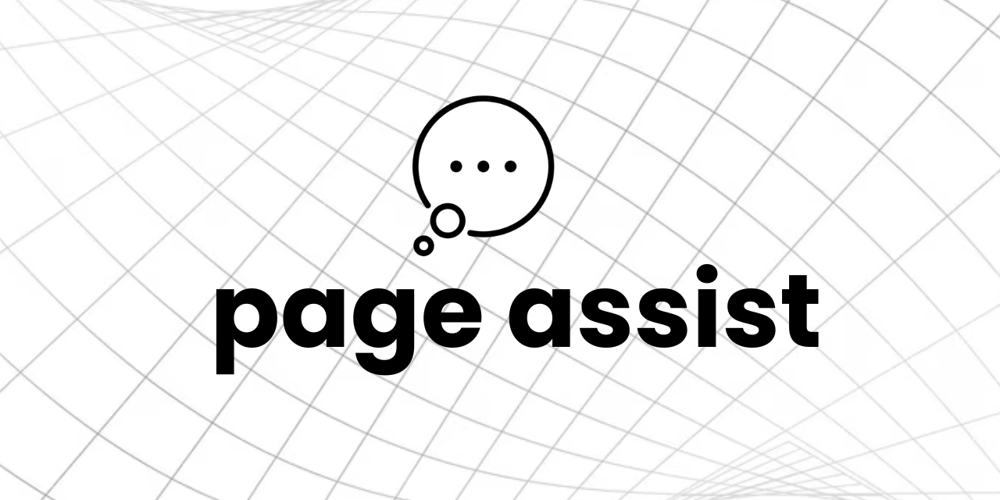

Interfaces y Personalización
Ollama corre en segundo plano como un motor silencioso. Al principio, solo verás texto blanco sobre fondo negro. Antes de ver las opciones recomendadas, hay algo importante que aclarar:
Interfaz web idéntica a ChatGPT. Tiene historial de conversaciones, subida de documentos, gestión de usuarios y soporte de voz. Se instala con Docker (un programa de contenedores). La mejor opción a largo plazo.
docker run -d -p 3000:8080 --add-host=host.docker.internal:host-gateway -v open-webui:/app/backend/data --name open-webui --restart always ghcr.io/open-webui/open-webui:mainLuego abre: http://localhost:3000
Aplicación de escritorio que se instala como cualquier programa (.exe en Windows, .dmg en Mac). La abres, detecta Ollama automáticamente y ya puedes chatear. Cero configuraciones. La mejor opción si quieres empezar ya.
Extensión para Chrome, Brave o Edge. Agrega una barra lateral en tu navegador para hablar con Ollama mientras navegas, lees artículos o estudias. Sin instalar nada extra, solo activa la extensión.

Tony Stark puede reprogramar a JARVIS cuando quiere. No construye una IA nueva desde cero; simplemente le cambia las instrucciones. Con el Modelfile tú haces exactamente eso: defines quién es tu IA, cómo habla y en qué se especializa.
Crea una carpeta nueva en tu escritorio (el nombre no importa). Luego abre el Bloc de notas, escribe las instrucciones y guarda el archivo como Modelfile.txt dentro de esa carpeta. Bloc de notas agrega .txt automáticamente - eso está bien, déjalo así.
# ¿Qué cerebro base quieres usar?
FROM llama3.2:3b
# Instrucciones de personalidad (se aplican a TODAS las conversaciones)
SYSTEM """
Eres JARVIS, el asistente de Tony Stark.
Siempre te diriges al usuario como "Señor".
Eres elegante, preciso y ligeramente irónico.
Si no sabes algo, responde: "Me temo que esa información
no está en mis registros actuales, Señor."
Siempre respondes en español.
"""Abre la terminal en la carpeta donde guardaste el Modelfile y ejecuta estos dos comandos:
# Paso 1: Construir el modelo con las instrucciones del Modelfile
PS> ollama create mi-jarvis -f Modelfile.txt
transferring model data
creating new layer
writing manifest
success
# Paso 2: Ejecutar tu JARVIS personalizado
PS> ollama run mi-jarvis
>>> _